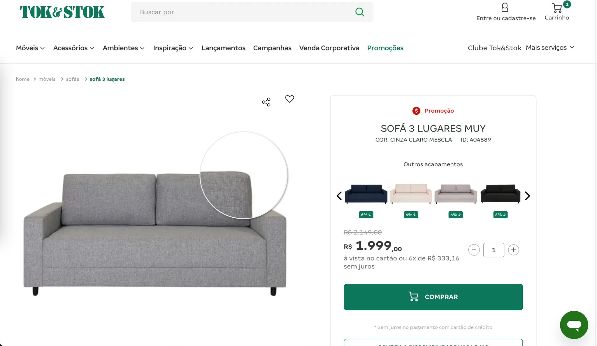

Melhorar a experiência do cliente ao dar zoom nas imagens de produto, e alinhar a funcionalidade à identidade visual do site, evitando a estranheza visual dos clientes.
UI Design | Benchmarking
Tok&Stok | Jun. 2024
A funcionalidade de zoom nas imagens dos produtos é essencial para a decisão de compra dos clientes, pois, desta forma, eles conseguem visualizar mais detalhes dos produtos desejados, facilitando a decisão de compra e reduzindo a possibilidade de frustração ao receber o produto e verificar que ele não é o que parecia ser. Ela é especialmente útil para produtos que possuem características como texturas, estampas ou detalhes de design. E percebe-se, inclusive, que inúmeros players do ramo do varejo também possuem essa funcionalidade.
A funcionalidade existente no site, cumpria sua função desejada, porém não correspondia à identidade visual do site, podendo quebrar a experiência de navegação do cliente e certa estranheza visual. Um outro ponto importante, é que ao abrir a funcionalidade de zoom, o cliente deixava de ver informações importantes e relevantes para a decisão de compra, como preço do produto e outras variedades de cor.
Melhorar a experiência do cliente ao dar zoom nas imagens de produto, e alinhar a funcionalidade à identidade visual do site, evitando a estranheza visual dos clientes.
O primeiro passo foi analisar o layout existente, buscando encontrar seus pontos fortes e pontos fracos.
O layout era o abaixo, na versão desktop e mobile:
O próximo passo foi realizar um benchmarking com outros players do varejo, tanto de móveis, quanto de outros setores como vestuário, por exemplo.
Após levantar os problemas na versão atual e realizar benchmarkings, verificando práticas comuns no mercado, parti para a etapa de ideação, na qual costumo utilizar a ferramenta Miro.
Nesta etapa faço diversos testes posicionando os componentes de diversas maneiras e verificando como eles se encaixam para construir a tela como um todo. É uma importante para levantar várias ideias e verificar quais funcionam melhor, para garantir uma decisão mais acertada.
Após as etapas anteriores, defini qual solução melhor atende aos requisitos levantados na definição da tarefa, e que se alinham ao design do site da Tok&Stok. Com a ideia definida, parti para a etapa de prototipação no Figma.
Página de produto:
A página de produto, na versão desktop, possui um zoom ao passar o mouse sobre a imagem, destacando a área em que o cursor está posicionado. Porém, a funcionalidade de zoom, abrindo um modal, que foi redesenhado nessa tarefa, permite aos usuários visualizarem os detalhes mais atentamente, podendo calibrar o nível de zoom desejado.
Versão final da funcionalidade de zoom:
Como é possível observar, essa versão possui uma grande área em branco para expansão da imagem. Permite ao usuário visualizar as miniaturas das demais fotos do produto. E traz informações adicionais, como o nome do produto, preço (preço original, preço promocionado, opção de parcelamento), outras variedades e botão de adicionar ao carrinho. Dessa forma, ao abrir a funcionalidade, o cliente não precisa sair do fluxo de compra, não é necessário que ele abra o zoom e o feche para seguir com a compra. Ele pode avaliar as informações e adicionar o produto ao carrinho.
Na versão mobile, decidimos não incluir o botão de adicionar ao carrinho e as outras variáveis do produto, pois com ele, seria necessário reduzir a área de visualização do produto, o que afetaria o propósito da funcionalidade. Porém, mantivemos as demais informações do produto. Nesta versão optamos por manter as setas para troca de imagens, mesmo que elas também mudem com o deslizar do dedo, para a direita ou esquerda, e os botões de +zoom e -zoom, para indicar ao cliente que essas ações são possíveis. Assim, visualmente o cliente já sabe quais ações podem ser tomadas, e ele não precisa descobrir que para alterar as imagens é necessário deslizar o dedo ou utilizar o movimento de pinça para aplicar o zoom.